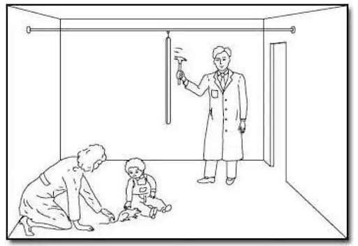
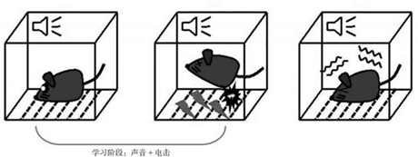
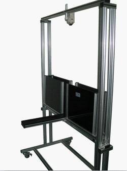

1920 年心理学家约翰·华生在约翰霍普金斯大学挑选了 11 个月大的艾伯特进行一项研究。开始时，实验室白鼠放在靠近艾伯特处，允许他玩弄挥它。这时， 儿童对白鼠并不恐惧。当白鼠在他周围游荡，他开始伸手触摸它。在后来的测试中，当艾伯特触摸白鼠时，华生就在艾伯特身后用铁锤敲击悬挂的铁棒，制造出响亮的声音。小艾伯特听到巨大声响后大哭起来，并表现出恐惧。经过几次这样将两个刺激配对，白鼠再次出现在艾伯特面前时，他对白鼠出现在房间里感到非常痛苦。他哭着转身背向白鼠，试图离开。显然，这名男婴已经将白鼠（原先的中性刺激，现在的条件刺激）与巨响（非条件刺激）建立了联系，并产生了恐惧或哭泣的情绪反应（原先对巨响的无条件反射，现在对白鼠的条件反射）。在实验的 17 天后，当华生将一只（非白色的）兔子带到房间，艾伯特也变得不安。对于毛茸茸的狗、海豹皮大衣，甚至华生戴上有白色棉花胡须的圣诞老人面具出现在他面前，他都显示出相同的反应，恐惧发生了泛化。
实验原理：根据条件反射的原理，给与大鼠强电刺激引起大鼠的恐惧情绪， 同时给与光线和声音的刺激，反复多次后，光性声音于电刺激建立条件反射，仅 仅给与光性或声音，都可以引起动物恐惧情绪
实验方法：大鼠置于震惊恐惧箱中，震惊恐惧箱为密闭不透光笼子，笼子底部为可通过电流的不锈钢栅栏，大鼠处于无法逃避足部受到持续电流刺激的状态, 刺激电流强度 8mA，刺激间隔随机，每次刺激 5min，连续 3-5d，电刺激的同时伴有声音或光线。造模成功的标志是，当仅仅给与光线或声音的时候，大鼠出现类似电刺激时的僵立行为，同时旷场实验和高架十字迷宫实验阳性，这类似与临床 PTSD 的症状。检测指标是当仅仅给与光线或声音的时候，动物出现僵立行为的时间和次数
实验原理：高架十字迷宫具有一对开臂和闭臂，大鼠由于嗜暗性会倾向于在闭臂中活动，但出于探究性又会在开臂中活动，在面对新奇刺激时，动物同时产生探究的冲动和恐惧，这就造成了探究和回避的冲突行为，从而产生焦虑心理。高架十字迷宫实验就是利用由于动物对新环境的探究和对高悬开放臂的恐惧而形成的矛盾冲突状态，从而反映出动物的焦虑情绪，所以高架十字迷宫既可以建立非条件反射焦虑动物模型，也可以作为测量动物焦虑反应的方法。如 PTSD 的动物，由于具有动物本身具有焦虑恐惧情绪，倾向于在闭臂中活动。
实验方法
实验前一个小时，提前将大鼠放入测试房间，并抚摸大鼠，以适应测试环境。
打开高架十字迷宫的软件，将软件调试好
将大鼠从中央区面向闭合臂放入迷宫，运行软件，测试人员迅速离开实验环境，避免人为干扰。
软件自动记录动物的活动情况，观察记录指标包括：开放臂进入次数、停留时间，闭合臂进入次数、停留时间。
实验完成后将大鼠放回笼内，将高架十字迷宫清理干净并喷洒酒精清洁迷宫。准备下一组实验。
统计记录的数据，计算开放臂停留时间比例，开放臂进入次数比例
在高架迷宫实验中，实验动物进入高架迷宫开放臂的次数与时间，分别占进 入两臂次数总和与在两臂停留时间总和的百分比，所表现的是实验动物趋近-规避冲突的行为结果，是评价动物焦虑表现的主要指标，与动物焦虑的程度直接相关，一般这两个指标之间也是具有高度相关性，如果动物在开放臂探索时间和次数的比例减少，则说明动物的焦虑程度高。
| 人的实验 | 动物实验 | |
|---|---|---|
| 实验设备 | ||
| 实验方案 | ||
| 实验设计测试哪些功能 | ||
| 测试指标 |